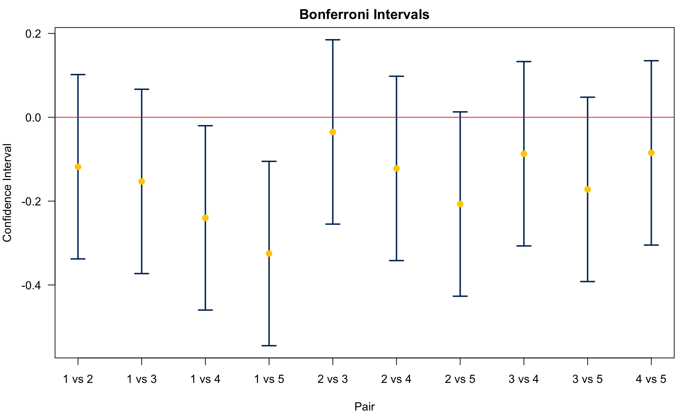

yield agent type
1 1.05 1 None
2 1.09 1 None
3 1.32 1 None
4 1.13 1 None
5 1.13 1 None
6 1.33 1 None
7 1.37 2 Bio1
8 1.12 2 Bio1
9 1.20 2 Bio1
10 1.24 2 Bio1
11 1.47 2 Bio1
12 1.35 2 Bio1
13 1.36 3 Bio2
14 1.33 3 Bio2
15 1.27 3 Bio2
16 1.50 3 Bio2
17 1.37 3 Bio2
18 1.14 3 Bio2
19 1.64 4 Chm1
20 1.41 4 Chm1
21 1.30 4 Chm1
22 1.46 4 Chm1
23 1.31 4 Chm1
24 1.37 4 Chm1
25 1.45 5 Chm2
26 1.34 5 Chm2
27 1.61 5 Chm2
28 1.54 5 Chm2
29 1.40 5 Chm2
30 1.66 5 Chm224 Multiple Comparison*
24.1 Multiplicity of Hypotheses
What do we do after ANOVA? In ANOVA we test
- \(\begin{align} &H_0: \mu_1 = \mu_2 = \dots = \mu_t\\ &H_1: \mu_i \ne \mu_j \text{ for some } i, j \end{align}\)
If we reject \(H_0\) in favor of \(H_1\), we conclude that at least one of the \(t\) population means differ from the others, or \(\mu_i \ne \mu_j\) for some \(i\) and \(j\). But the question is, we only conclude that there is some difference, but we don’t know which means differ from each other, or what pairs \((\mu_i, \mu_j)\) are different. ANONA itself does not answer such questions. Results of an ANOVA do NOT tell us which group(s) is(are) different from the others.
So after ANOVA, we may want to test
- \(\begin{align} &H_0^{ij}: \mu_i = \mu_j\\ &H_1^{ij}: \mu_i \ne \mu_j \end{align}\) for all pairs of \((i, j)\) using, say, two-sample \(t\)-test.
We will be testing many hypotheses. As we discussed before, if there are \(t\) populations under the study, there are \(t\) chooses 2 \(t \choose{2}\) pairs to be tested. For example, if there are 5 treatments, there will be 10 hypotheses. The test statistic will be like \(t_{ij} = \frac{\bar{y}_i - \bar{y}_j}{s_p^{ij} \sqrt{\left( \frac{1}{n_i} + \frac{1}{n_j} \right)}}\) for all pairs of \((i, j)\), assuming all have the same population variance.
However, performing too many pairewise tests simultaneously is problematic. If there are 10 hypotheses and each is tested at \(\alpha = 0.05\), there will be a high chance that one hypothesis will be falsely rejected. \[\small{\begin{align} P(\text{At least 1 hypothesis is falsely rejected}) &= 1 - P(\text{No hypothesis is falsely rejected}) \\ &= 1 - (1 - \alpha)^{t} \\ & = 1 - (1 - 0.05)^{10} = 0.4 \end{align}}\] provided that all tests or hypotheses are independent. This probability is called the family-wise error rate (FWER). We’ll take about it in more detail later.
This high probability problem always arises due to multiplicity of hypotheses, meaning that multiple testings are conducted simultaneously in one single research study. This problem of multiplicity is more serious when you are testing more hypotheses.
[Example: Gene Expression Analysis] A data set is collected on gene expressions on 10,000 genes. This kind of research is done if you are trying to find genes responsible for cancer. If those genes are correctly detected, you can study their structure and come up with a cure.
If we test each of the hypotheses at \(\alpha = 0.05\), then \(P(\text{At least 1 hypothesis is falsely rejected}) \approx 1\). In fact, on average 5% of them (500 hypotheses) will be falsely discovered even if all null hypotheses are true. This is a big problem in scientific studies.
In this chapter we will learn how to do multiple pairwise comparisons or testings simultaneously while controlling the familywise error rate at a low level, reducing the number of false positives, or mitigating the inflated Type-I error rate due to multiple comparisons. The main methods introduced here include Bonferroni correction, Fisher’s LSD (Least Significant Difference), Tukey’s HSD (honestly significant difference), and Dunnett’s Method. Before we jump into these methods, let’s first look at an examples, refreshing our knowledge of ANOVA.
Example of Multiple Comparison: ANOVA (Example 9.4 in SMD)
A study was done to test 5 different agents used to control weeds. Each of these agents were applied to sample of 6 one-acre plots. The hay was harvested and the total yield was recorded. The data set is saved in the R data frame data_weed.
Summary statistics are shown below.
agent sample_mean sample_sd sample_size type
1 1.17 0.120 6 None
2 1.29 0.127 6 Bio1
3 1.33 0.120 6 Bio2
4 1.42 0.125 6 Chm1
5 1.50 0.127 6 Chm2The questions are
- if there is a difference between the agents
- which agent provides the best yield
The first question can be answered by ANOVA. Let’s check the assumptions, and perform ANOVA.
First we check the equality of variances \(H_0: \sigma_1^2 = \dots = \sigma_5^2\).
library(car)
(levene_test <- leveneTest(yield ~ agent, data = data_weed))Levene's Test for Homogeneity of Variance (center = median)
Df F value Pr(>F)
group 4 0.12 0.97
25 # Bartlett test is adapted for normally distributed data.
(bartlett_test <- bartlett.test(yield ~ agent, data = data_weed))
Bartlett test of homogeneity of variances
data: yield by agent
Bartlett's K-squared = 0.03, df = 4, p-value = 1# The Fligner-Killeen test is most robust against departures from normality. Use it when there are outliers.
(fligner_test <- fligner.test(yield ~ agent, data = data_weed))
Fligner-Killeen test of homogeneity of variances
data: yield by agent
Fligner-Killeen:med chi-squared = 0.4, df = 4, p-value = 1Then we check the normality assumption \(H_0:\) Data are generated from a normal distribution for each type of weed agents. The qqplot looks good.
Next, we perform ANOVA to test if there is a difference among the agents.
- \(\begin{align} &H_0: \mu_1 = \mu_2 = \cdots = \mu_5\\ &H_1: \mu_i \ne \mu_j \text{ for some pairs } (i, j) \end{align}\)
Analysis of Variance Table
Response: yield
Df Sum Sq Mean Sq F value Pr(>F)
agent 4 0.365 0.0912 5.96 0.0016 **
Residuals 25 0.383 0.0153
---
Signif. codes: 0 '***' 0.001 '**' 0.01 '*' 0.05 '.' 0.1 ' ' 1We reject \(H_0\), and conclude that there is a difference among the agents.
In the ANOVA, we only conclude that mean yields are different under different agents. How do we say which agent is the best? Are chemical agents (Agent 4, 5) better than the biological agents (Agent 2, 3)? All of these questions can be answered by all pairwise comparisons.
- \(\begin{align} &H_0^{ij}: \mu_i = \mu_j\\ &H_1^{ij}: \mu_i \ne \mu_j \end{align}\)
Here shows the boxplot for each weed agent. The ANOVA has told us there are some mean yield differences among these agents, and we are going to find out which 2 agents or which pair produce statistically discernible different mean yields.
24.2 Familywise Error Rate (FWER) and Bonferroni Correction
24.2.1 Familywise Error Rate (FWER)
Instead of using Type I error rate \(\alpha\) for each single 2-sample test, we should use a different type of error rate. We need to control the so-called familywise error rate (FWER) denoted as \(\alpha_F=P(\text{Falsely reject at least one hypotheses}) \le \alpha_0\), \(F\) for Familywise. This is a probability of falsely rejecting at least one hypothesis of all the hypotheses considered. We hope \(\alpha_F\) is less than or equal to some small value say \(\alpha_0\), just like we hope the Type I error rate of each individual test \(\alpha < 0.05\).
The idea is that when we are doing multiple comparisons, we view all the comparisons, here in the weed yield example, all 10 2-sample tests, as a whole single problem like one single family, and we are controlling the falsely rejection rate for that one family, not the falsely rejection rate for every single family member, a 2 sample test in the family.
If there are \(m\) (independent) hypotheses each tested at significance level \(\alpha_I\), then \(\alpha_F = 1 - (1 - \alpha_I)^m\). So the larger \(m\) is, the higher \(\alpha_F\) is. To achieve a desired level of \(\alpha_F\), which is typically as small as individual \(\alpha_I\), we might lose power of true discovery because to make \(\alpha_F\) small, that is, we decrease the probability of falsely rejecting a \(H_0\), we tend to be more conservative to reject \(H_0\), and we make it harder to reject \(H_0\). But when doing so, we may miss some false \(H_0\) that should have been rejected.
As shown in the figure below, if \(\alpha_I = 0.1\), then \(\alpha_F \approx 1\) when \(m\) is more than 40, meaning that there will definitely be a false discovery in the study. If \(\alpha_I = 0.05\), then the probability of committing a false discovery is higher than 80%! In practice, \(m\) can be 10 thousands or even millions large. Then \(\alpha_F\) is basically one, and there are lots of false rejections of \(H_0\) in the study, resulting in misleading scientific conclusions. We need to find a way to control or adjust \(\alpha_F\) to a much smaller level.
24.2.2 Bonferroni Correction
We will discuss four methods: Bonferroni, Fisher’s LSD (Least Significant Difference), Tukey’s HSD (Honestly Significant Difference), and Dunnett’s method. With \(H_0^{ij}: \mu_i = \mu_j\) and \(H_1^{ij}: \mu_i \ne \mu_j\), in all of the methods we reject \(H_0^{ij}\) if \(|\overline{y}_i - \overline{y}_j| > C\) for some value \(C\).
The idea is that when \(\mu_i \ne \mu_j\), it’s more likely to have large \(|\overline{y}_i - \overline{y}_j|\). When \(|\overline{y}_i - \overline{y}_j|\) is so large that is over some determined threshold \(C\), we conclude that \(\mu_i \ne \mu_j\). Think about the 2-sample pooled \(t\)-test. The test statistic is \(\small t_{test} = \frac{\overline{y}_1 - \overline{y}_2}{\sqrt{s_p^2 \left(\frac{1}{n_1}+\frac{1}{n_2}\right)}}\), and we reject \(H_0\) if \(|t_{test}| > t_{\alpha/2, \, n_1+n_2-2}\). Therefore, we reject \(H_0\) if
\[|\overline{y}_1 - \overline{y}_2| > t_{\alpha/2, \, n_1+n_2-2} \sqrt{s_p^2 \left(\frac{1}{n_1}+\frac{1}{n_2}\right)}.\]
The problem is the threshold \(t_{\alpha/2, \, n_1+n_2-2} \sqrt{s_p^2 \left(\frac{1}{n_1}+\frac{1}{n_2}\right)}\) is not that good when lots of tests being considered simultaneously. The multiple comparison methods try to provide better critical value and estimate of variance, so that \(\alpha_F\) is properly controlled. We will look into the pros and cons for these methods later.
The first method is Bonferroni correction. The Bonferroni inequality provides a method for selecting \(\alpha_I\) so that \(\alpha_F\) is bounded below a specific value. The Bonferroni inequality provides a rough upper bound for \(\alpha_F\) that \[ \alpha_F = 1 - (1 - \alpha_I)^m \le (\alpha_I^0 + \dots + \alpha_I^m).\] When each of the \(m\) tests has the same rate \(\alpha_I\), \[ \alpha_F \le m\alpha_I.\]
If there are \(m\) hypotheses, and we want \(\alpha_F \le \alpha_0 = 0.05\), then we can test individual hypothesis at \(\alpha_I = \frac{\alpha_0}{m} = \frac{0.05}{m}\), and then use a standard method such as \(t\)-test. This will guarantee that \[\alpha_F \le m\alpha_I=m\left(\frac{\alpha_0}{m}\right) = m\left(\frac{0.05}{m}\right) = 0.05.\]
However, the problem with this approach is that if \(m\) is large, \(\alpha_I = \frac{0.05}{m}\) will be very small, and the chance of rejecting \(H_0\) will be small. This correction procedure is very conservative with respect to \(\alpha_F\) and the power of Bonferroni correction method is very poor.
In the Bonferroni method, we use test statistic \(t_{ij} = \dfrac{|\overline{y}_i - \overline{y}_j|}{\sqrt{\hat{\sigma}^2\left( \frac{1}{n_i} + \frac{1}{n_j}\right)}}\) with Type I error rate of \(\alpha_I = \frac{\alpha}{m}\), \(m\) is the number of hypotheses.
The value \(\hat{\sigma}^2 = s_W^2 = MSW = \frac{SSW}{df_{W}}\) from ANOVA is the pooled variance (pooled by total \(t\) samples) that estimates the common variance \(\sigma^2\), where \(df_{W} = n_1+\dots +n_t - t\). We then reject \(H_0\) or say that pair \((\mu_i, \mu_j)\) are statistically discernibly different if \[\color{blue}{\boxed{|\overline{y}_i - \overline{y}_j| > t_{\frac{\alpha}{2m}, df_{W}}\sqrt{s_W^2\left( \frac{1}{n_i} + \frac{1}{n_j}\right)}}}\]
Look at the formula carefully. The differences between Bonferroni and the unadjusted 2-sample pooled \(t\)-test are
- Change the critical value from \(t_{\frac{\alpha}{2}, \, n_i+n_j-2}\) to \(t_{\frac{\alpha/m}{2}, \, n_1+\dots +n_t - t}\)
- Change the pooled variance from \(s_p^2\) pooled by the \(i\)-th and \(j\)-th samples only to \(\hat{\sigma}^2 = s_W^2\) pooled by all \(t\) samples
In Bonferroni method, we make the individual error rate smaller, and we consider all groups when estimating \(\sigma^2\). The estimate \(\hat{\sigma}^2\) is generally better than \(s_p^2\) because it averages over more sample variances together, and it makes the estimate less varied and closer to the true value of \(\sigma^2\) if the truth is that all populations have the common \(\sigma^2\). Think about it. \(\hat{\sigma}^2\) uses more information from all samples, but \(s_p^2\) only considers the \(i\)th and \(j\)th groups.
Example of Multiple Comparison: Bonferroni
agent sample_mean sample_sd sample_size type
1 1.17 0.120 6 None
2 1.29 0.127 6 Bio1
3 1.33 0.120 6 Bio2
4 1.42 0.125 6 Chm1
5 1.50 0.127 6 Chm2Back to the weed yield example, and see the pair comparison result using the Bonferroni method. We have 5 different weed agents. One is control group, no agent (Agent 1), 2 biological agents (Agent 2 and 3), and 2 chemical agents (Agent 4 and 5).
We know \(n_i\) and \(s_i\), so we can get the followings:
\(SSW = \sum_{i}(n_i-1)s_i^2 = 0.3825\), \(df_{W} = 25\).
\(s_W^2 = MSW = \hat{\sigma}^2 = \frac{SSW}{df_{W}} = \frac{0.3825}{25} = 0.0153\).
Also, set \(\alpha = 0.05\), and \(m = 10\), so
- \(\frac{\alpha}{2m} = \frac{0.05}{2\cdot 10} = 0.0025\), and \(t_{\frac{\alpha}{2m}=0.0025, \, df_W=25} = 3.078\)
Therefore, using the Bonferroni method, we conclude \(\mu_i - \mu_j \ne 0\) if \(|\overline{y}_i - \overline{y}_j| > 3.078\sqrt{0.0153\left(\frac{1}{6}+ \frac{1}{6}\right)} = 0.2198.\)
Here lists comparisons between Agent 1 (control) with Agent 2 to 5.
- Agent 1 v.s. 5: \(|1.500 –1.175| = 0.325 > 0.2198\)
- Agent 1 v.s. 4: \(|1.415 –1.175| = 0.240 > 0.2198\)
- Agent 1 v.s. 3: \(|1.328 –1.175| = 0.153 < 0.2198\)
- Agent 1 v.s. 2: \(|1.293 –1.175| = 0.118 < 0.2198\)
We can see that Chm2 (Agent 5) and Chm1 (Agent 4) are different from Control (Agent 1), but Bio1 and Bio2 are not significantly different from the control group.
\(\color{blue}{|\overline{y}_i - \overline{y}_j| > t_{\frac{\alpha}{2m}, df_{W}}\sqrt{s_W^2\left( \frac{1}{n_i} + \frac{1}{n_j}\right)}}\)
Let me first show how I do the Bonferroni correction using R step by step.
[,1] [,2] [,3] [,4] [,5] [,6] [,7] [,8] [,9] [,10]
[1,] 1.18 1.18 1.18 1.18 1.29 1.29 1.29 1.33 1.33 1.42
[2,] 1.29 1.33 1.42 1.50 1.33 1.42 1.50 1.42 1.50 1.50## all pair distances |y_bar_i - y_bar_j|
y_bar_dist <- apply(y_bar_pair, 2, dist)
dd <- t(combn(1:5, 2))
names(y_bar_dist) <- paste(dd[, 1], dd[, 2], sep = " vs ")
y_bar_dist1 vs 2 1 vs 3 1 vs 4 1 vs 5 2 vs 3 2 vs 4 2 vs 5 3 vs 4 3 vs 5 4 vs 5
0.118 0.153 0.240 0.325 0.035 0.122 0.207 0.087 0.172 0.085 ## set values
alpha <- 0.05; m <- choose(5, 2); n <- 6
## perform anova
aov_res <- aov(yield ~ agent, data = data_weed)
## extract df_W
df <- df.residual(aov_res)
## extract s_W
sw <- sigma(aov_res)
## critical value of bonferroni
t_bon <- qt(p = alpha / (2 * m), df = df, lower.tail = FALSE)
## margin of error
(E_bon <- t_bon * sw * sqrt((1/n + 1/n)))[1] 0.22## decision
(y_bar_dist > E_bon) 1 vs 2 1 vs 3 1 vs 4 1 vs 5 2 vs 3 2 vs 4 2 vs 5 3 vs 4 3 vs 5 4 vs 5
FALSE FALSE TRUE TRUE FALSE FALSE FALSE FALSE FALSE FALSE There is a shortcut to do Bonferroni correction for pairwise comparisons. We can use the function pairwise.t.test(). If we want to do 2-sample pooled \(t\) test, aregument pool.sd should be FALSE because this argument is for the pooled variance pooled by all groups combined, not group \(i\) and \(j\). The p.adjust.method is none because we do not control or adjust FWER. The var.equal should be TRUE, so that the pooled \(t\) test is used. Otherwise, it will perform 2 sample \(t\) test with non-equal variances.
The output is a matrix including p-values of all pair comparison testings. We can tell which pairs are significant by comparing their p-value with the significance level \(\alpha\).
If we want to do Bonferroni correction, use p.adjust.method = "bonferroni". Again, in Bonferroni, (1, 4) and (1, 5) are statistically significantly different. In traditional 2 sample \(t\) test, significant results include (1, 4), (1, 5), (2, 5), and (3, 5).
## individual 2-sample pooled t-test but not pooled by all groups
pairwise.t.test(data_weed$yield, data_weed$agent, pool.sd = FALSE,
p.adjust.method = "none", var.equal = TRUE)
Pairwise comparisons using t tests with non-pooled SD
data: data_weed$yield and data_weed$agent
1 2 3 4
2 0.129 - - -
3 0.052 0.634 - -
4 0.007 0.124 0.246 -
5 0.001 0.018 0.036 0.269
P value adjustment method: none ## Bonferroni correction
pairwise.t.test(data_weed$yield, data_weed$agent,
p.adjust.method = "bonferroni")
Pairwise comparisons using t tests with pooled SD
data: data_weed$yield and data_weed$agent
1 2 3 4
2 1.000 - - -
3 0.421 1.000 - -
4 0.025 1.000 1.000 -
5 0.001 0.077 0.237 1.000
P value adjustment method: bonferroni For each pair, we can draw its confidence interval for \(\mu_i - \mu_j\). The CI formula is \(\color{blue}{(\overline{y}_i - \overline{y}_j) \pm t_{\frac{\alpha}{2m}, df_{W}}\sqrt{s_W^2\left( \frac{1}{n_i} + \frac{1}{n_j}\right)}}\). The yellow dot represents \(\overline{y}_i - \overline{y}_j\). Centered at \(\overline{y}_i - \overline{y}_j\), we plus and minus the margin of error \(t_{\frac{\alpha}{2m}, df_{W}}\sqrt{s_W^2\left( \frac{1}{n_i} + \frac{1}{n_j}\right)}\) to get the upper and lower bound of the CI. If the CI does not include zero, we conclude that \(\mu_i\) and \(\mu_j\) are not equal. Here again \(\mu_1\) and \(\mu_4\) are different. \(\mu_1\) and \(\mu_5\) are different too.

24.3 Fisher’s LSD (Least Significant Difference)
The second method introduced here is Fisher’s LSD, short for Least Significant Difference. We reject \(H_0\) or say that pair \((\mu_i, \mu_j)\) are significantly different if \[\color{blue}{\boxed{|\overline{y}_i - \overline{y}_j| > t_{\frac{\alpha}{2}, df_{W}}\sqrt{s_W^2\left( \frac{1}{n_i} + \frac{1}{n_j}\right)}}}\] Unlike the Bonferroni method, Fisher’s LSD does NOT correct for multiple comparisons or FWER. The diffrence between Bonferroni and Fisher’s LSD is that Bonferroni uses \(\alpha/m\) but Fisher’s LSD uses \(\alpha\) itself. The Fisher’s LSD test is basically a set of individual \(t\)-tests. Two-sample pooled \(t\)-tests compute the pooled variance from only the two groups being compared, while the Fisher’s LSD test computes the pooled variance from all the groups (which gains power). Also, the degrees fo freedom in the \(t\) critical value is \(df_W\), not \(n_i+n_j-2\) in the 2 sample pooled \(t\) test.
Example of Multiple Comparison: Fisher’s LSD
agent sample_mean sample_sd sample_size type
1 1.17 0.120 6 None
2 1.29 0.127 6 Bio1
3 1.33 0.120 6 Bio2
4 1.42 0.125 6 Chm1
5 1.50 0.127 6 Chm2The process of doing Fisher’s LSD is pretty similar to doing Bonferroni.
\(\frac{\alpha}{2} = 0.025\), and \(t_{0.025, 25} = 2.0595\)
We conclude \(\mu_i - \mu_j \ne 0\) if \(|\overline{y}_i - \overline{y}_j| > 2.0595\sqrt{0.0153\left(\frac{1}{6}+ \frac{1}{6}\right)} = 0.1471\)
Agent 1 v.s. 5: \(|1.500 –1.175| = 0.325 > 0.1471\)
Agent 1 v.s. 4: \(|1.415 –1.175| = 0.240 > 0.1471\)
Agent 1 v.s. 3: \(|1.328 –1.175| = 0.153 > 0.1471\)
Agent 1 v.s. 2: \(|1.293 –1.175| = 0.118 < 0.1471\)
Agent 2 v.s. 5: \(|1.500 –1.293| = 0.207 > 0.1471\)
Agent 2 v.s. 4: \(|1.415 –1.293| = 0.112 < 0.1471\)
Agent 2 v.s. 3: \(|1.328 –1.293| = 0.035 < 0.1471\)
Agent 3, 4 and 5 are different from control. Agent 2 and 5 are different.
- \(\color{blue}{|\overline{y}_i - \overline{y}_j| > t_{\frac{\alpha}{2}, df_{W}}\sqrt{s_W^2\left( \frac{1}{n_i} + \frac{1}{n_j}\right)}}\)
df[1] 25sw ^ 2[1] 0.0153[1] 0.147(y_bar_dist > E_lsd)1 vs 2 1 vs 3 1 vs 4 1 vs 5 2 vs 3 2 vs 4 2 vs 5 3 vs 4 3 vs 5 4 vs 5
FALSE TRUE TRUE TRUE FALSE FALSE TRUE FALSE TRUE FALSE If we use pairwise.t.test(), pool.sd = TRUE because we do use the pooled variance \(s_W^2\) that is pooled by all 5 samples. p.adjust.method = "none" because Fisher’s LSD does not adjust the Type I error rate. It still uses \(\alpha\) in every individual testing. The p-value result for every pair comparison shows that if \(\alpha = 0.05\) is the threshold or cutoff value, (1, 3), (1, 4), (1, 5), (2, 5), and (3, 5) pair comparisons reject their \(H_0\) and conclude that there is a mean yield difference between their groups.
pairwise.t.test(data_weed$yield, data_weed$agent, pool.sd = TRUE,
p.adjust.method = "none") ## Fisher’s LSD
Pairwise comparisons using t tests with pooled SD
data: data_weed$yield and data_weed$agent
1 2 3 4
2 0.111 - - -
3 0.042 0.628 - -
4 0.002 0.100 0.235 -
5 1e-04 0.008 0.024 0.245
P value adjustment method: none The Fisher’s LSD confidence interval for \(\mu_i - \mu_j\) is \(\color{blue}{(\overline{y}_i - \overline{y}_j) \pm t_{\frac{\alpha}{2}, df_{W}}\sqrt{s_W^2\left( \frac{1}{n_i} + \frac{1}{n_j}\right)}}\). The CI for (1, 3), (1, 4), (1, 5), (2, 5), and (3, 5) do not include zero, leading to the same conclusion as the previous p-value method.
24.4 Tukey’s HSD (honestly significant difference)
The next method is the Tukey’s HSD method. We reject \(H_0\) or say that pair \((\mu_i, \mu_j)\) are significantly different if \[\color{blue}{\boxed{|\overline{y}_i - \overline{y}_j| > \frac{q_{\alpha}(t, df_{W})}{\sqrt{2}}\sqrt{s_W^2\left( \frac{1}{n_i} + \frac{1}{n_j}\right)}}}\]
Here, the square root term or the standard error keeps the same as before, but we don’t use a \(t\) critical value anymore. Instead, we use a different critical value \(\frac{q_{\alpha}(t, df_{W})}{\sqrt{2}}\), where \(q_{\alpha}(k, v)\) is the upper-tail critical value of the studentized range distribution for comparing \(k\) different populations with degrees of freedom \(v\). Because we assume there are \(t\) populations and df is \(df_W\), I put them in the formula.
Studentized range distribution is similar to \(t\) distribution when comparing 2 population means, but they are different things, and studentized range distribution actually controls FWER in some way but \(t\) distribution does not. No need to worry about the details of this distribution. We just use it to apply the Tukey’s HSD method.
In R, we can use qtukey(p = alpha, nmeans = k, df = v, lower.tail = FALSE) to obtain \(q_{\alpha}(k, v)\) with specified \(\alpha\), number of means to be compared \(k\), and the degrees of freedom \(v\). Notice that the \(\alpha\) here is the familywise error rate \(\alpha_F\). We directly specify and control \(\alpha_F\) level, and the probability of falsely rejecting at least one pairwise tests is \(\alpha_F\).
Example of Multiple Comparison: Tukey’s HSD
agent sample_mean sample_sd sample_size type
1 1.17 0.120 6 None
2 1.29 0.127 6 Bio1
3 1.33 0.120 6 Bio2
4 1.42 0.125 6 Chm1
5 1.50 0.127 6 Chm2\(k = 5\), \(df_{W} = 25\), \(n = 6\). Therefore, \(q_{\alpha}(k, v) = q_{0.05}(5, 25) = 4.153\).
We conclude \(\mu_i - \mu_j \ne 0\) if \(|\overline{y}_i - \overline{y}_j| > 4.153\sqrt{\frac{0.0153}{6}} = 0.2097\)
Agent 1 v.s. 5: \(|1.500 –1.175| = 0.325 > 0.2097\)
Agent 1 v.s. 4: \(|1.415 –1.175| = 0.240 > 0.2097\)
Agent 1 v.s. 3: \(|1.328 –1.175| = 0.153 < 0.2097\)
Agent 1 v.s. 2: \(|1.293 –1.175| = 0.118 < 0.2097\)
Agent 2 v.s. 5: \(|1.500 –1.293| = 0.207 < 0.2097\)
Agent 2 v.s. 4: \(|1.415 –1.293| = 0.112 < 0.2097\)
Agent 2 v.s. 3: \(|1.328 –1.293| = 0.035 < 0.2097\)
Agents 4 and 5 are different from control. No Significant difference between agents 3, 4, 5 and 2.
- \(\color{blue}{|\overline{y}_i - \overline{y}_j| > q_{\alpha}(k, df_{W})\sqrt{\frac{s_W^2}{n}}}\)
df[1] 25sw^2[1] 0.0153(q_tukey <- qtukey(p = alpha, nmeans = 5, df = df, lower.tail = FALSE))[1] 4.15(E_tukey <- q_tukey * sw * sqrt(1 / n))[1] 0.21(y_bar_dist > E_tukey)1 vs 2 1 vs 3 1 vs 4 1 vs 5 2 vs 3 2 vs 4 2 vs 5 3 vs 4 3 vs 5 4 vs 5
FALSE FALSE TRUE TRUE FALSE FALSE FALSE FALSE FALSE FALSE A faster way to conduct Tukey’s HSD test is to use R function TukeyHSD(). After doing ANOVA, we can save the result, say res_aov, then to implement Tukey method, just put the ANOVA result in the function TukeyHSD(). It will provide all information for each pair comparison.
Tukey multiple comparisons of means
95% family-wise confidence level
Fit: aov(formula = yield ~ agent, data = data_weed)
$agent
diff lwr upr p adj
2-1 0.118 -0.09172 0.328 0.480
3-1 0.153 -0.05672 0.363 0.234
4-1 0.240 0.03028 0.450 0.019
5-1 0.325 0.11526 0.535 0.001
3-2 0.035 -0.17474 0.245 0.988
4-2 0.122 -0.08774 0.332 0.447
5-2 0.207 -0.00276 0.417 0.054
4-3 0.087 -0.12274 0.297 0.741
5-3 0.172 -0.03776 0.382 0.146
5-4 0.085 -0.12476 0.295 0.757In the output, diff is \(\overline{y}_i - \overline{y}_j\) where \(i\) and \(j\) are shown in the first column. lwr and upr are the lower bound and upper bound of the CI for \(\mu_i - \mu_j\), respectively. The last column represents p-values. With \(\alpha_F = 0.05\), (4, 1) and (5, 1) are statistically discernible. Their corresponding lower bound is greater than zero, meaning that it’s CI for \(\mu_i - \mu_j\) does not cover zero, so \(\mu_i - \mu_j\) is statistically significantly different from zero.
24.5 Dunnett’s Method
The last but not least method introduced here is Dunnett’s method. We reject \(H_0\) or say that pair \((\mu_i, \mu_j)\) are significantly different if
\[\color{blue}{\boxed{|\overline{y}_i - \overline{y}_j| > d_{\alpha}(t - 1, df_{W})\sqrt{s_W^2\left( \frac{1}{n_i} + \frac{1}{n_j}\right)}}}\]
Well we still have the same standard error, the square root term, but we use another critical value \(d_{\alpha}(t-1, df_W)\). In general, for \(d_{\alpha}(k, df)\), the value of Dunnett’s test distribution, \(k\) is the number of non-control groups or factors.
Note that this method is only used for comparing with a control or reference group. In our example, Agent 1 is the control group. So the parameter \(k\) is \(t-1\), where \(t\) is the number of agents, which is 5. Again, the \(\alpha\) here is the familywise error rate \(\alpha_F\). We directly specify and control \(\alpha_F\) level, and the probability of falsely rejecting at least one pairwise tests is \(\alpha_F\).
Consider 2 treatment groups and one control group. If you only want to compare the 2 treatment groups with the control group, and do not want to compare the 2 treatment groups to each other, the Dunnett’s test is preferred.
Example of Multiple Comparison: Dunnett’s Method
\(t - 1 = 4\), \(df_{W} = 25\), \(n = 6\). Therefore, \(d_{\alpha}(t - 1, df_{W}) = d_{0.05}(4, 25) = 2.61\).
We conclude \(\mu_i - \mu_j \ne 0\) if \(|\overline{y}_i - \overline{y}_j| > 2.61\sqrt{\frac{2(0.0153)}{6}} = 0.1862\)
Agent 1 v.s. 5: \(|1.500 –1.175| = 0.325 > 0.1862\)
Agent 1 v.s. 4: \(|1.415 –1.175| = 0.240 > 0.1862\)
Agent 1 v.s. 3: \(|1.328 –1.175| = 0.153 < 0.1862\)
Agent 1 v.s. 2: \(|1.293 –1.175| = 0.118 < 0.1862\)
Only the chemical agents 4 and 5 are different from control. No biological agents are different from control.
\(\color{blue}{|\overline{y}_i - \overline{y}_j| > d_{\alpha}(t - 1, df_{W})\sqrt{\frac{2s_W^2}{n}}}\)
There is no R built-in function that computes \(d_{\alpha}\) critical value. But we can install the package nCDunnett, and use the function qNCDun(). NC stands for Non-Central. The argument p is the probability to the left tail and keep in mind that the subscript \(\alpha\) in the critical value is the probability to the right tail. So we get to put \(1-\alpha\) there. nu is the degrees of freedom. rho here we use 0.5, meaning that all sample sizes are equal. The sample size in each group is 6, and we need to specify it 4 times corresponding to the number of non-control groups. delta is the non-centrality parameter that needs to be specified 4 times too. Here we assume they are all zero, i.e., the test uses the central distribution.
library(nCDunnett)
(d_dun <- qNCDun(p = 1 - alpha, nu = df,
rho = c(0.5, 0.5, 0.5, 0.5),
delta = c(0, 0, 0, 0), two.sided = TRUE))[1] 2.61(E_dun <- d_dun * sw * sqrt(2 / n))[1] 0.186head(y_bar_dist > E_dun, 4)1 vs 2 1 vs 3 1 vs 4 1 vs 5
FALSE FALSE TRUE TRUE The result shows (1, 4) and (1, 5) have different means. The figure below shows the CIs for \(\mu_1 - \mu_j, j = 2, 3, 4, 5\).
Note
All comparisons illustrated are two-sided tests. One-sided tests can be applied too.
24.6 Comparison of Methods
To sum up, from the example, we had \(\mu_i - \mu_j \ne 0\) if
Bonferroni: \(|\overline{y}_i - \overline{y}_j| > 0.2198\)
Fisher’s LSD: \(|\overline{y}_i - \overline{y}_j| > 0.1471\)
Tukey HSD: \(|\overline{y}_i - \overline{y}_j| > 0.2097\)
Dunnett: \(|\overline{y}_i - \overline{y}_j| > 0.1862\)
Fisher’s LSD does not control FWER, but all others do have FWER 0.05.
Bonferroni is the most conservative method and has the poorest discovery rate. You see its threshold value is the largest, making it the most difficult one to reject \(H_0\), and hence results in a lower power or lower discovery rate.
Discovery rate for the Tukey’s is better than Bonferroni, but not as good as Dunnett’s. However, Dunnett’s used only to compare with the control.
If the objective is to compare only with a control, then Dunnett’s is more powerful among three. Otherwise, Tukey’s is more powerful than Bonferroni.
Although Bonferroni is not very powerful, it does have advantage that it can be used in any situation (whether it is one factor or multi-factor analyses) whenever there are multiple hypotheses.
All methods here are based on the condition that the data are random samples from normal distributions with equal variances. There are nonparametric multiple comparison procedures out there, such as Kruskal–Wallis.
Here we focus on balanced data. When there are large differences in the number of samples, care should be taken when selecting multiple comparison procedures.
-
There is another method called Scheffe’s method. Unlike methods specifically for pairwise comparisons such as Tukey HSD, Scheffe’s method can generally investigate all possible contrasts of the means. In other words, it considers not only th pairwise comparisons but any possible combinations of the means, for example \(c_1\mu_1 + c_2\mu_2 + \cdots + c_t\mu_t\).
For pairwise comparisons, we reject \(H_0\) or say that pair \((\mu_i, \mu_j)\) are significantly different if
\[\color{blue}{\boxed{|\overline{y}_i - \overline{y}_j| > \sqrt{(t-1) F_{\alpha, t-1, N-t}}\sqrt{s_W^2\left( \frac{1}{n_i} + \frac{1}{n_j}\right)}}}\] For pairwise comparisons, the Scheffé test has lower statistical power than other tests, even more conservative than Bonferroni method. To increase power, the Scheffé method needs larger sample size.